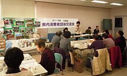
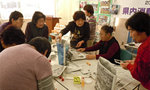

|
|
報告者：岩岡埼玉消団連事務局長 食品表示の統一化を検討しているなどの消費者庁の動きと、調査のデータを基に、参加団体の市町村についてみえてきたことを報告しました。 「地域で生き生きと活動するために・消費者団体の役割について」 秩父市くらしの会  「環境立市ちちぶ」を目指す環境保全の市民会議に、運営委員として参画し、市民一人一人が出来る身近なエコ活動の実践に取り組んでいます。不要になった新聞紙7枚で出来るマイバッグ作りを実践しており、「親子でエコバッグ作り」や環境フェスタ・市のホームページで紹介をしています。「エコライフDAY」のチェックシートを使っての参加、会員研修親睦旅行や『であいの広場』(秩父市社協主催)の参加、公設卸売市場での地産米（キヌヒカリ）消費拡大キャンペーンのお手伝いなどでも一般市民とふれあいの場がありました。「米消費拡大・地産地消」推進運動の一環で料理講習会や、消費生活セミナーも開催します。くらぶ活動には会員が講師登録をしています。ごみゼロ作戦として有価物を回収、会の資金源にしています。また、常に行政との接点を探しています。  報告後、参加者全員が、秩父市くらしの会の皆さん指導のもと、新聞紙のエコバッグ作りを体験しました。 3グループに分かれて活動交流・情報交換しました。 |